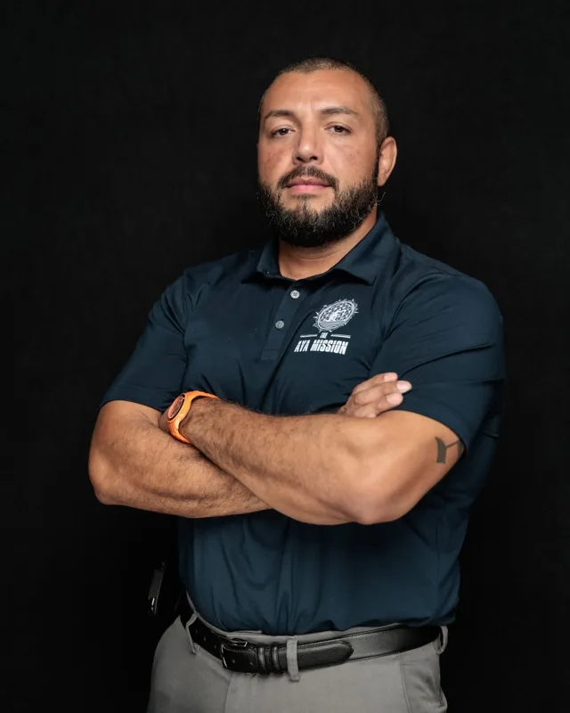
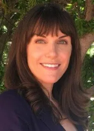
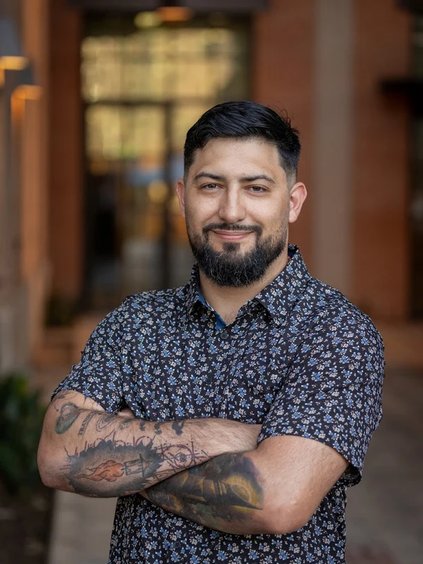
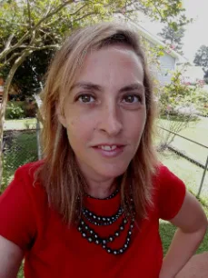
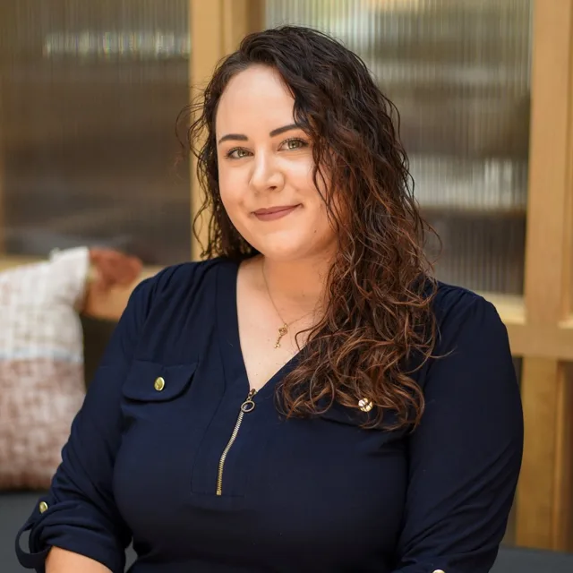

Our Team
Founded by Veterans, for Veterans — our leadership brings lived experience of both service and healing.

Ulises Lopez
Ulises leads The Aya Mission with a singular commitment: expanding access to psychedelic-assisted therapies for Veterans. He provides strategic vision, works closely with the board, manages financial stewardship, and represents the organization publicly, ensuring all programs reflect the highest standards of care and integrity.
A decorated U.S. Army combat Veteran and Purple Heart recipient, Ulises brings nine years of active-duty experience to his leadership, including Ranger qualification, Advanced Rated Jumpmaster status, and Level 4 Modern Army Combatives certification. He also holds a Brazilian Jiu-Jitsu Black Belt under Thiago Ximenez.
After transitioning from military service, Ulises built a distinguished career within the federal healthcare system, advancing from volunteer roles to positions supporting clinical analytics, health informatics, and organizational innovation — efforts centered on elevating the quality of care provided to Veterans nationwide. Valedictorian and keynote speaker of Gateway Community College's 2017 graduating class, his uncommon blend of service, leadership, and resilience continues to fuel his mission-driven work championing equitable access to transformative therapies for those who served.

Diane Smith
Diane brings her experience as an Air Force veteran to her dual roles at The Aya Mission. During her decade of military service (2003–2013), she evolved from an enlisted Intelligence analyst to a commissioned Intelligence officer, deploying alongside Marine, Army, Navy, and special forces personnel.
Following her military career, Diane earned her Doctorate in Audiology from the University of Arizona and now practices as an audiologist in Tucson, specializing in vestibular diagnostics. Her profound commitment to The Aya Mission stems from personal transformation — having experienced firsthand how plant medicine saved and revolutionized her own life. Her leadership focuses on extending these healing opportunities to fellow veterans.

Joel R. Velazquez
Joel brings extensive military expertise to The Aya Mission as a medically retired Marine and Purple Heart Medal recipient. Following his military career, he extended his service by applying his operational and intelligence skills to humanitarian crises across the Middle East and Europe within the nonprofit sector.
With over 17 years of combined experience in military operations, intelligence, and nonprofit management, Joel's approach to service was shaped by his father's 30-year legacy as a firefighter and paramedic. At The Aya Mission, Joel designs and implements digital solutions emphasizing coordination, integration, affordability, and accessibility — ensuring the organization's technology effectively supports its mission to serve veterans.

Jennifer Attila
Jennifer leads The Aya Mission's research initiatives, bringing scientific rigor to the organization's work in ethical, culturally grounded psychedelic research and harm reduction practices. She holds a master's degree in psychology specializing in neuropsychology, with a doctorate in public health underway.
Living with Parkinson's disease, Jennifer contributes a unique dual perspective of researcher and lived experience. She spearheads several critical initiatives, including EEG-based studies on ayahuasca, development of the organization's Institutional Review Board, and advocacy for veteran-centered healing modalities — bridging scientific inquiry with spiritual care, honoring both empirical evidence and the transformative potential of psychedelic experiences.

Holly Horan, LCSW-S, LCDC
Holly served 7 years in the United States Marine Corps, deploying twice to Camp Fallujah, Iraq, with the 9th Communications Battalion. She completed her B.A. in Psychology while on active duty, then earned her Master of Social Work from the University of Houston in 2015, becoming a Licensed Clinical Social Worker and Licensed Chemical Dependency Counselor.
In 2020 Holly opened her private practice, Courageous Growth HTX, helping adults heal from addiction, trauma, past relationship issues, inner child wounds, and low self-worth. A 2023 ayahuasca retreat in Peru changed the trajectory of her life and inspired her to become a Certified Transformational and Psychedelic Integration Coach. After participating in the inaugural Veterans Day Retreat with The Aya Mission in November 2024, she joined as an integration coach to support the continued healing of the veteran community.